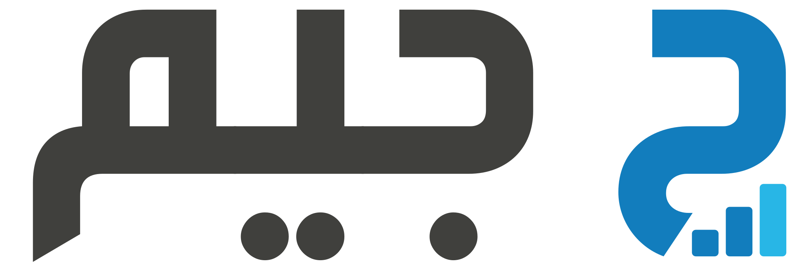

أهلًا بعودتك
اسأل عن بياناتك، واحصل على لوحتك في ثوانٍ.
© 2026 جيم

اسأل عن بياناتك، واحصل على لوحتك في ثوانٍ.
كل مشروع له محادثته الخاصة ولوحاته ومصادره — اضغط على مشروع لفتح مساحة عمله.
كل منظمة لها مشاريعها ومستخدموها الخاصون بها.
البيانات اللي جيم بيقدر يقرأ منها هنا — الأنظمة المتصلة وملفات المستودع.
| اسم المستخدم | الاسم | طريقة الدخول | الدور | الأنظمة | الحالة |
|---|
يُستخدم وقت رفع أي ملف PDF جديد ليقرأ صفحاته كصور — بما فيها صفحة ممسوحة ضوئيًا أو جدول/رسم بياني مضمّن — بدل الاكتفاء باستخراج النص الرقمي فقط. إعداد مستقل تمامًا عن "الموديل المستخدم حاليًا" أعلاه: ممكن تختار موديل مختلف لكل غرض. لو فشلت القراءة بالذكاء الاصطناعي لأي سبب، يرجع النظام تلقائيًا للاستخراج النصي العادي بدل ما يفشل الرفع بالكامل.
يُستخدم لما ترفق صورة داشبورد أو مخطط لإعادة بنائه ببياناتك — إعداد مستقل تمامًا عن "الموديل المستخدم حاليًا" أعلاه: ممكن تختار موديل مختلف لتحليل الصور. لو تركته «نفس الموديل الحالي»، ستُرسل الصورة لنفس الموديل المختار فوق كالمعتاد؛ بعض الموديلات الداخلية لا تدعم تحليل الصور فترجع خطأً واضحاً بدل تجاهل الصورة بصمت.
يُستخدم فقط في شاشة «التكاملات الخارجية» لاستخراج هوية بصرية من صورة شعار أو دليل هوية بلا نص مصاحب. مُعطّل افتراضيًا حتى تختار موديل صراحةً هنا وتؤكد إنه يدعم تحليل الصور — أي عملية استخراج بصورة بدون هذا التأكيد تُرفض برسالة واضحة بدل إرسال الصورة لموديل ما يدعمهاش.
مناسب للتحليل الدقيق والأسئلة المركّبة اللي تحتاج فهم وربط بين أكثر من مصدر بيانات في نفس الوقت.
بديل سريع وقوي، مع إمكانية اختيار موديل محدد من قائمة الموديلات المتاحة في الإعدادات.
يعمل على خوادم المؤسسة نفسها دون إرسال أي بيانات لجهة خارجية — الخيار الأنسب للبيانات الحساسة، مع إمكانية اختيار حجم الموديل.